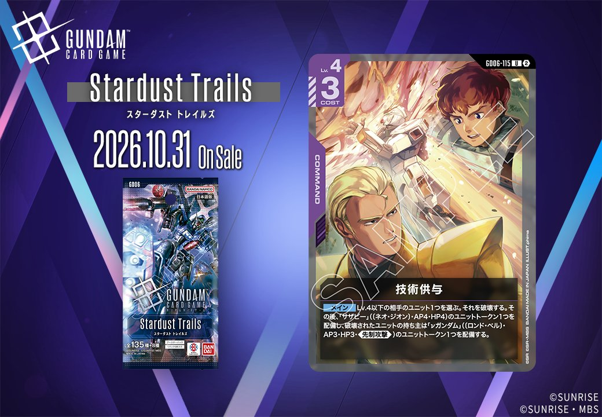
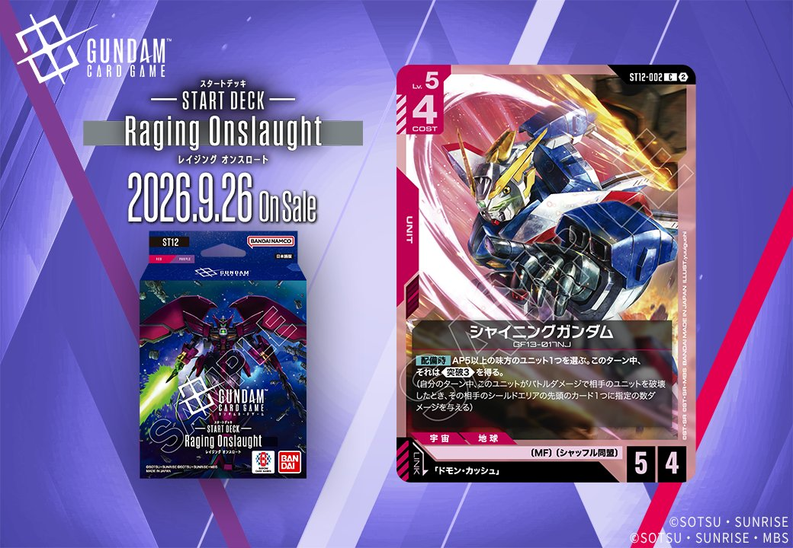
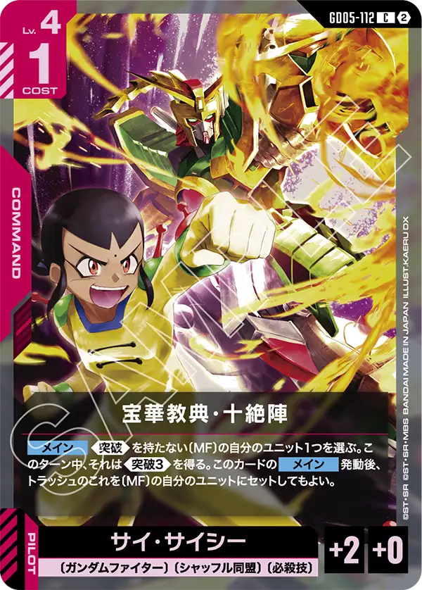
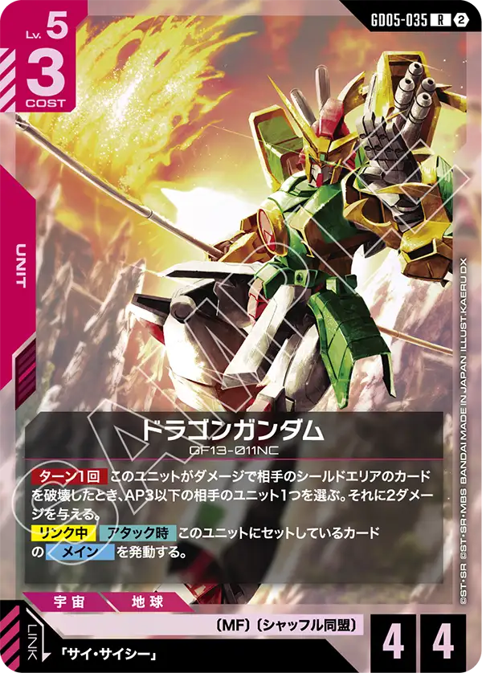

今回は、Stardust Trails収録のCOMMAND「技術供与」(GD06-115／紫)と、ST12収録のUNIT「シャイニングガンダム」(ST12-002／赤)の2枚を紹介します。シャイニングガンダムは「ドモン・カッシュ」を対象とするリンクを持ち、それぞれ2026年10月31日、2026年9月26日発売です。

技術供与 (GD06-115)
| 色 | 紫 | タイプ | COMMAND |
| Lv | 4 | コスト | 3 |
効果: 【メイン】Lv.4以下の相手のユニット1つを選ぶ。それを破壊する。その後、「サザビー」(〔ネオ・ジオン〕・AP4・HP4)のユニットトークン1つを配備し、破壊されたユニットの持ち主は「ガンダム」(〔ロンド・ベル〕・AP3・HP3・《先制攻撃》)のユニットトークン1つを配備する。
技術供与(GD06-115)はコスト3のコマンドで、Lv.4以下の相手ユニット1つを破壊できる確定除去。破壊後にAP4/HP4の「サザビー」トークンを自分側に配備できるため、除去と盤面展開を1枚でこなせる。 ただし破壊されたユニットの持ち主にもAP3/HP3・《先制攻撃》の「ガンダム」トークンが渡る点は留意が必要で、AP・HPで上回るサザビー側との差はあるものの、相手にも展開を許す構造になっている。

シャイニングガンダム (ST12-002)
| 色 | 赤 | タイプ | UNIT |
| Lv | 5 | コスト | 4 |
| AP | 5 | HP | 4 |
| 特徴 | 〔MF〕、〔シャッフル同盟〕 | ||
| リンク条件 | 「ドモン・カッシュ」 | ||
効果: 【配備時】AP5以上の味方のユニット1つを選ぶ。このターン中、それは《突破3》を得る。(自分のターン中、このユニットがバトルダメージで相手のユニットを破壊したとき、その相手のシールドエリアの先頭のカード1つに指定の数ダメージを与える)
シャイニングガンダム(ST12-002)はCOST4でAP5/HP4、【配備時】にAP5以上の味方ユニット1つへ《突破3》を付与できる赤のLv.5ユニットです。自身のAPが5あるため対象を自己完結でき、シールドエリアへの追加ダメージで攻めを厚くできます。 特徴〔MF〕〔シャッフル同盟〕を持ち「ドモン・カッシュ」とのリンクに対応する2026-09-26発売のカードです。


関連カード
-
 ガンダム・バルバトスアダプト(GD03-056)紫系デッキ内採用率36.2% (1754デッキ)
ガンダム・バルバトスアダプト(GD03-056)紫系デッキ内採用率36.2% (1754デッキ) -
 三日月・オーガス(ST05-010)紫系デッキ内採用率36.1% (1749デッキ)
三日月・オーガス(ST05-010)紫系デッキ内採用率36.1% (1749デッキ) -
 ガンダム・バルバトス（第1形態）(GD02-054)紫系デッキ内採用率35% (1695デッキ)
ガンダム・バルバトス（第1形態）(GD02-054)紫系デッキ内採用率35% (1695デッキ) -
 百錬(ST05-006)紫系デッキ内採用率29.4% (1422デッキ)
百錬(ST05-006)紫系デッキ内採用率29.4% (1422デッキ) -
 グレイズ改(ST05-004)紫系デッキ内採用率29.4% (1422デッキ)
グレイズ改(ST05-004)紫系デッキ内採用率29.4% (1422デッキ) -
 マスターガンダム(GD05-033)赤系デッキ内採用率2.8% (136デッキ)
マスターガンダム(GD05-033)赤系デッキ内採用率2.8% (136デッキ) -
 シャイニングガンダム(GD05-042)赤系デッキ内採用率1% (50デッキ)
シャイニングガンダム(GD05-042)赤系デッキ内採用率1% (50デッキ) -
 クーロンガンダム(GD05-036)赤系デッキ内採用率0.9% (43デッキ)
クーロンガンダム(GD05-036)赤系デッキ内採用率0.9% (43デッキ) -

宝華教典・十絶陣(GD05-112)赤系デッキ内採用率0.4% (20デッキ) -

ドラゴンガンダム(GD05-035)赤系デッキ内採用率0.4% (18デッキ)